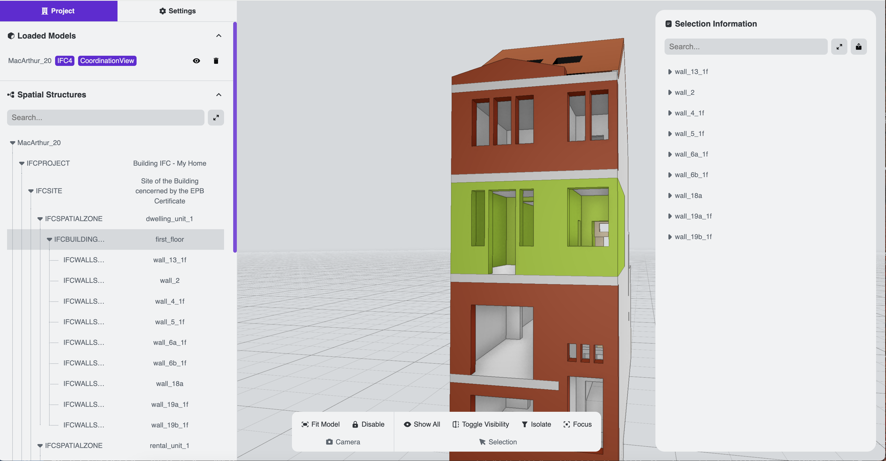
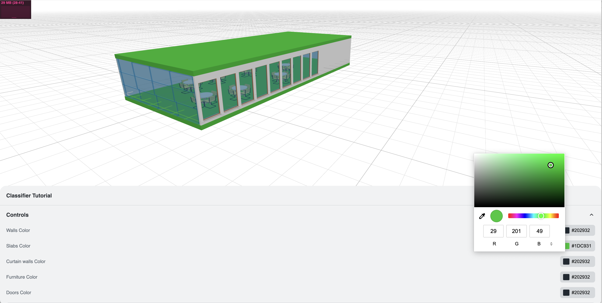
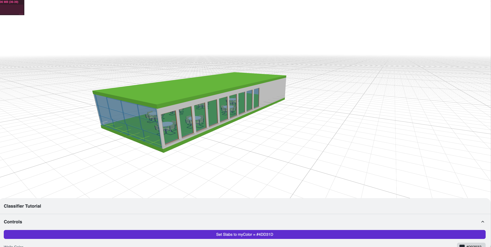
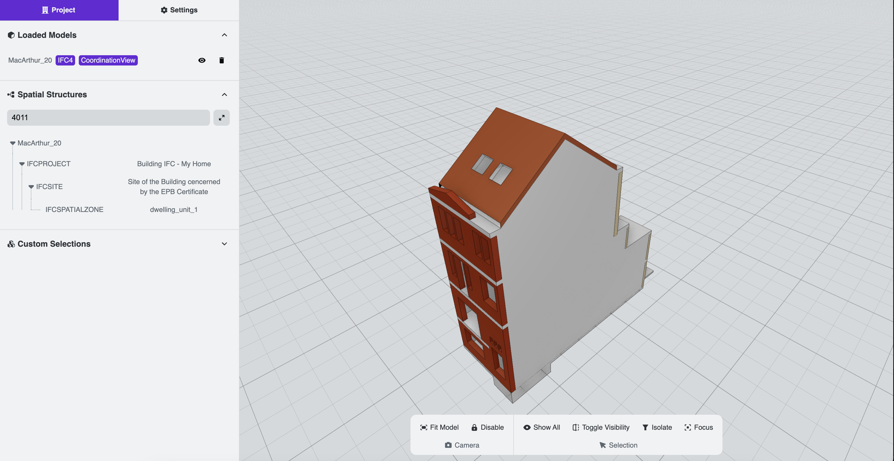
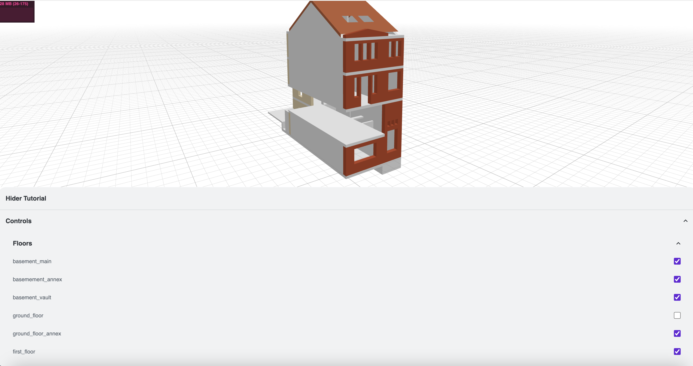
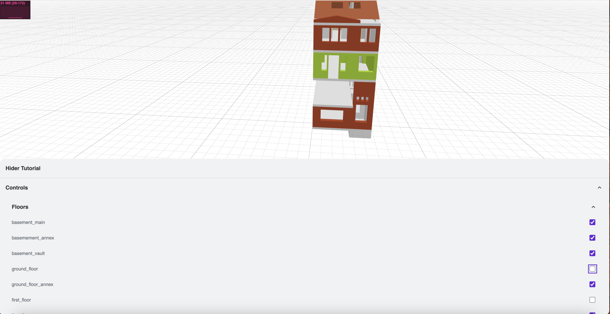
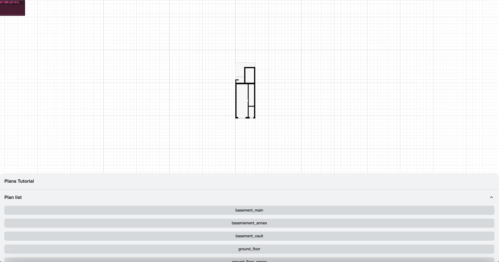
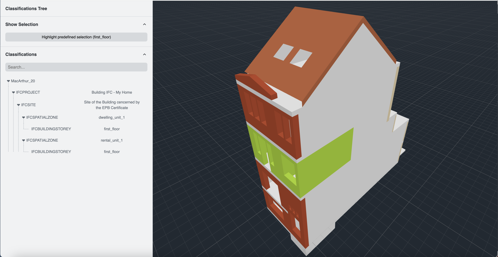

ThatOpen Viewer
These are my notes for the exploration and modification of the ThatOpen Viewer (version od July 2024).
History
Started as IFC.js
IFC.js is a library that converts any browser into an IFC viewer. It was created by Antonio González Viegas. IFC.js parses IFC entities to WebGL geometry through THREE.js The IFC.js library is now deprecated / not maintained.
The project changed to That Open and the tools have been redeveloped with Web Components
Access and doc of That Open
Links
Technology stack
Typescript, TSDoc, Lit Framework : Vite / Vanilla
- Builders : Webpack, Babel, Gulp, Rollup, Vite, Snowpack, EsBuild
- Framework: Angular, React, Vue, Vanilla
- WC: Polymer, Lit, Stencil, Fast, Vaadin
- Language: JavaScript, TypeScript
- Test: Jest
Environment - July 2024
Setup
{kind=link}
Project located in:
X_NODE_APP/thatopen/that-open-v2.1.0
Based on guideline in https://github.com/ThatOpen/engine_templates
-> create a project folder
-> in the folder, open a terminal and execute: npm create bim-app@latest
? Choose a template for your new BIM app: vanilla
Project created successfully! Now execute the following in terminal:
/* If using NPM */
npm i
npm run dev
/* If using Yarn */
yarn install
yarn dev
MUST Have:
npm i stats.js (not all the others!)
Not sure if still needed:
npm i @types/three
The application is structured with an index.html which contains a component <bim-grid> to host the UI
<bim-grid id="app"></bim-grid>
<script type="module" src="/src/main.ts"></script>
The code is in main.ts with a reference to the bim-grid
const app = document.getElementById("app") as BUI.Grid;
Changes to use the tutorials
To put the experiments (from the ThatOpen tutorials) in the same set, I have modified the index.html to be able to use alternative scripts, e.g., main-ifc-loader.ts to experiment with the IfcLoader. The tutos all use a <div id="container"> to host the UI. I have add that div to the index.html.
<div id="container"></div>
<bim-grid id="app"></bim-grid>
<script id="mainscript" type="module"></script>
A script sets the src attribute of mainscript to the selected main-... source. Within the template sources, the following sets the UI so that app has a zero height and container gets enough space.
const app = document.getElementById("app")!;
container.setAttribute('style','width: 100vw; height: 80vh; position: relative;')
app.setAttribute('style','width: 100vw; height: 0vh; position: relative;')
Upload the IFC without a User action
I need to be able to upload the model without using the UI. This is done in main-axo.ts. In that case the import section of the toolbar is removed.
See

{kind=link}
Create a number of file with some of the tutorials
src/tutorials/main-ifc-loader.ts
- reads /data/MacArthur_20.ifc
- writes downloads/MacArthur_20.frag moved to /data/MacArthur_20.frag (fragments)
- writes downloads/MacArthur_20.json moved to /data/MacArthur_20.json (properties)
src/tutorials/main-ifc-json-exporter.ts
- reads /data/MacArthur_20.frag (to show)
- reads /data/MacArthur_20.ifc
- writes downloads/properties.json moved to /data/properties.json (properties) (same size as the + export from main-ifc-loader)
src/tutorials/main-ifc-relations-indexer.ts
- reads /data/MacArthur_20.ifc
- writes downloads/relations-index-all.json moved to /data/relations-index-all.json
- reads /data/relations-index-all.json
More on the JSON (properties)
The IfcJsonExporter, used in main-ifc-json-exporter.ts produces a JSON out of the Ifc file.
In that JSON the IFC class is replaced by a numerical ID.
The correspondence is defined in the file ifc-schema.d.ts located in that-open-2/node_modules/web-ifc/ifc-schema.d.ts. For instance, the file contains export declare const IFCSPATIALZONE = 463610769;
In the JSON, the IFCSPATIALZONE type is replaced by 463610769, as in
"4011": {
"expressID": 4011,
"type": 463610769,
"GlobalId": {
"value": "2bgVD2zFGHxgaO_aUMs4qX",
"type": 1,
"name": "IFCGLOBALLYUNIQUEID"
},
"OwnerHistory": {
"value": 5,
"type": 5
},
"Name": {
"value": "dwelling_unit_1",
"type": 1,
"name": "IFCLABEL"
},
"Description": {
"value": "Dwelling of the first floor",
"type": 1,
"name": "IFCTEXT"
},
Use the classifier
The Classifier, used in main-ifc-classifier.ts enables to get all elements of specific(s) types.
The classifier returns a collection of fragments.
The classifier code is in @thatopen/components/dist/fragments/Classifier/index.d.ts
It works on the map FRAGS.FragmentIdMap
It is then possible to make an operation on these fragments, such a changing the color.
Change the color of a group with the provided UI 
{kind=link}
Same as a preset with a button added to the UI 
{kind=link}
Use the relationsTree and Search
The Project information panel in /src/components/Panels/ProjectInformation.tsuses the same capabilities as in /src/tutorials/main-ifc-relations-tree.ts. Namely, the relationsTree available in
/@thatopen/ui-obc/dist/components/tables/RelationsTree/index.d.ts
/@thatopen/ui-obc/dist/components/tables/RelationsTree/src/template.d.ts
A search base on the expressID or the name provide the structure: Project (panel) > Spatial Structure > 4011 or name 
{kind=link}
The search on spatial structure works only for 'spatial' elements (e.g., IfcSpatialZone 4011 & 4013 and IfcBuildingStorey 1700 or 2224).
Search on walls, ... are handled differently looking for 'entities' and not implemented there.
Observed behavior in tutorials/main-ifc-relations-tree.ts:
When a selection (click) is made in the left panel (at a specific level of the tree), the selection is highlighted in the scene
{kind=link}
Use the hider
The hider with the version v2.1.0 in /src/tutorials/main-ifc-hider.ts works ok with all the small.xxx files, but not with the file relations-index-all.json derived from MacArthur_20.ifc. However when using the indexer straight on (without restoring the indexer from the json), the hider works.
Hider at work 
{kind=link}
Actually, the hider also works with the main.ts and main-axo.ts with isolate in the toolbar and the code in /src/components/Toolbars/Sections/Selection.ts. But there is uses the selection made by the user click and available in highlighter.selection.select.
WARNING! I have used the /src/tutorials/main-ifc-hider.ts to set up the highlighter.highlightByID
For all storeys the hider works as a 'hider' while for first_floor it works as a highlighter !!!
Highlighter for 'first_floor and Hider for the others' 
{kind=link}
Use the exploder
Source in /src/tutorials/main-ifc-exploderrelations-tree-2.ts
Does not work with MacArthur_20.ifc, although no error message. To be investigated.
Use the floor plan maker and viewer
Source in /src/tutorials/main-front-floorplanqs.ts
Only shows one plan for MacArthur_20.ifc (for all storeys). To be investigated.
Floorplans at work 
{kind=link}
Make and Highlight a Selection without a User Action
The selection would be limited to aggregates such as a
- IfcSpatialZone
- IfcSpace
- IfcZone
- IfcBuildingStorey
- IfcBuilding
I started this in /src/tutorials/main-ifc-relations-tree-2.ts but I could not get anywhere with the version available on July 7th (in that-open-2)!
With the version v2.1.0 it is way better!
The the highlighter is a front end components and apparently rendering of the base components needs to be done before one can use the highlighter. So I have put the code in a function showPredefinedSelection and used a setTimeout(showPredefinedSelection,200) to get a display instead of a black screen!
Predefined Highlight on 'first_floor' and relationsTree set to the corresponding floor 
{kind=link}
- The relationsTree is visible on the left panel, with the structure related to the 'first_foor'
- The button Highlight predefined selection (first_floor) makes it possible to get the the initial highlight after another selection has been made with the mouse
- The highlight is visible on the main viewport
Integration in main-axo.ts script
- To start with, I use the query string to pass the parameters that drive the behavior (e.g, ifcFileURL query parameter)
- Then, I use the value of parameters in the code which I changed to integrates the capabilities surfaced in the tutorial changes
- The capabilities are showcased in this server
Dev and Build
To start in dev: npm run dev
To build: npm run build gives errors (from the ThatOpen Code)
and 'npm run build --force gives the same result as npm run build